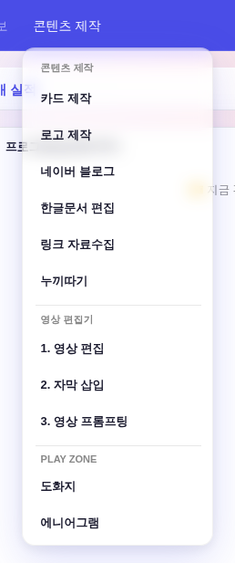
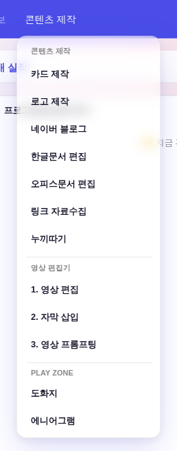
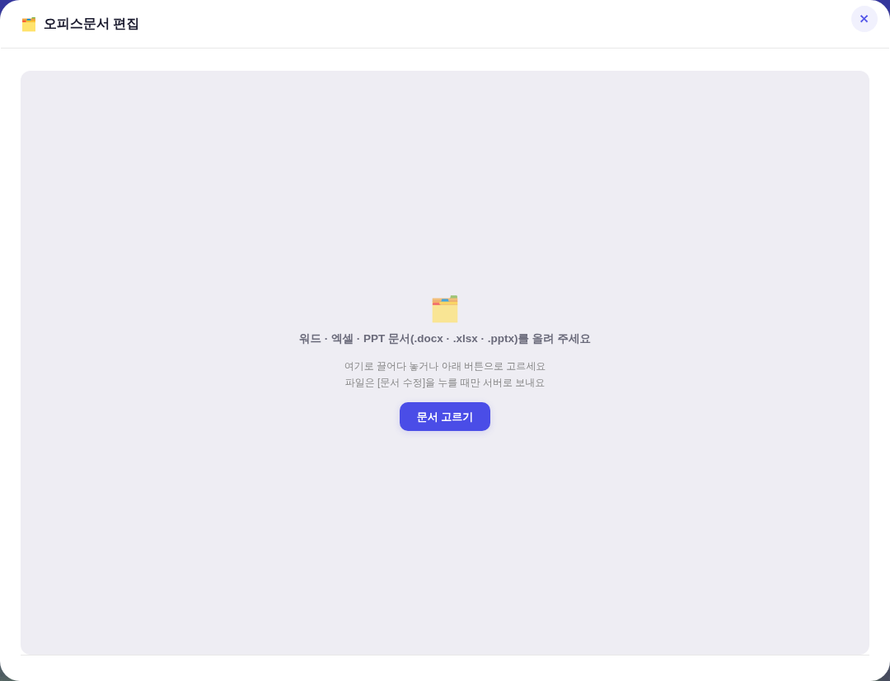

지시(운영자): nerdboard 게시물(github.com/iOfficeAI/OfficeCLI — "Office suite purpose-built for AI agents") 스크린샷과 함께 「이게 콘텐츠 제작에 하나의 기능으로 넣을 수 있는건지, 넣을 수 있다면 구현까지 완료해줘」. 판정 = 넣을 수 있다 — 한글문서 편집(260803)이 이미 같은 아키텍처(업로드 → Actions에서 claude+편집도구 → 결과 회수)를 깔아 놨고, OfficeCLI는 그 자리의 워드·엑셀·PPT판 엔진으로 정확히 맞는다.
아래 스냅샷은 정본 하네스(tools/smoke_layout.mjs)와 같은 방식으로 ?qa=1 목데이터를 1500×900 헤드리스에 띄워 찍은 것 —
실API·실데이터 미접촉. 「전」은 git show origin/main:index.html을 그대로 서빙해 같은 시나리오를 두 판본에서 돌렸다.


항목 문법(itemCss·호버 알파)은 기존 빌더 그대로 — 신규 색·형태 0. 드롭다운 외 화면은 무접촉이라 캘린더·대시보드 회귀 축 없음(smoke_layout PASS).

| 층 | 한글문서 편집(260803 · 기존) | 오피스문서 편집(이번) |
|---|---|---|
| 앱(모달) | openHwpEditor · hw-* | openOfficeEditor · of-* (hw-* 레이아웃 CSS 공용 · 신규 CSS 0) |
| Worker | /api/hwp/upload·dispatch·file | /api/office/upload·dispatch·file (같은 계약 · 확장자 3종 화이트리스트) |
| Actions | hwp-edit.yml + claw-hwp 「hwp」 스킬 | office-edit.yml + OfficeCLI 1.0.143 핀 + officecli 스킬(SKILL.md) |
| 폴링 | /api/blog/draft(drafts/<id>.json) 공용 — 신설 0 | |
| 시크릿 | GITHUB_PAT(Worker) · CLAUDE_CODE_OAUTH_TOKEN_* 5계정 체인(Actions) 공용 — 신설 0 | |
| 데이터 위생 | 원본 즉시 삭제 · 잔재 TTL(원본 1시간/수정본 3일) · 앱은 닫으면 전멸(공용 PC) · 상한 8MB — 동일 | |
| 실측 | 결과 |
|---|---|
npm 설치 @officecli/officecli@1.0.143 | 성공 — 단일 바이너리 즉시 실행(.NET 자체포함 · 의존성 0) |
docx 만들기→한글 문단 추가→set으로 수정→재읽기 | 왕복 무손상 (「예산은 삼천만원…」→「오천만원…」) |
| pptx 슬라이드 추가·outline 읽기 | 성공 (「9월 기획공연」) |
| xlsx 셀 경로 문법 | /Sheet1/A1 (SKILL.md 문서화 확인) |
에이전트 스킬 설치 officecli skills claude | SKILL.md 417줄 설치 — 스킬만(바이너리 재다운로드 없음) |
함정① 원스텝 officecli install | 핀 안 된 최신 바이너리를 ~/.local/bin에 하나 더 깐다 → 워크플로에서 금지 명문화 |
| 함정② 상주(resident) 모드 | 편집이 close/유휴 전까지 디스크에 안 내려간다(set 직후 zip 원문 무변 실측) → 워크플로가 결과 검사 전 officecli close 강제(이중 close 무해 실측) |
게이트 = check_design 1578/1578(신규 raw hex 0) · check_refs ✓ · check_wiring ✓ · build_annual_yr PASS · smoke_login PASS · smoke_layout PASS(둘 다 playwright 실설치 후 실제 rc — SKIP 아님).
헤드리스 = 전 드롭다운 오피스 항목 0개 / 후 1개 · 모달 3상태 렌더 · 이웃(한글문서 편집) 모달 정상 오픈 · pageerror 0.
Worker·워크플로 = ESM/YAML 문법 검증 ✓ · 메인 스크립트 node --check ✓.